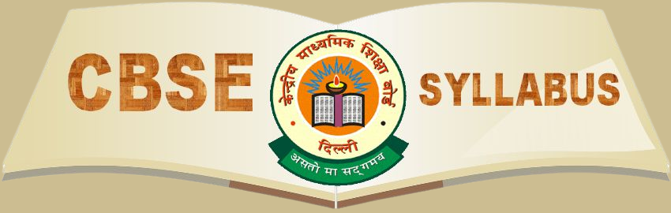

The CBSE envisions a robust, vibrant and holistic school education that will engender excellence in every sphere of human endeavour. The Board is committed to provide quality education to promote intellectual, social and cultural vivacity among its learners. It works towards evolving a learning process and environment, which empowers the future citizens to become global leaders in the emerging knowledge society.

Infinity Quest Academy
follows the Central Board of Secondary Education (CBSE) Curriculum
which is the most widely accepted board curriculum in the country.Our endeavor is to embody
the spirit of a holistic school eduaction aimed at achieving excellance in all areas of creative
human avtivity.
Our curriculum aims at developing the whole child intellectually,socialy,emotionally,and physicallly.
The thrust is on imparting the basic skills of literacy,communication and numeracy, cretaive and
physical skills while at the same time inculating confidence, self-discipline and high self-esteem. At
Infinity quest academy we further focus on the child enjoying learning motivated by natural curiosity
gaining knowledge, experience and imaginative understanding.
We are committed to promoting academic excellence and the emotional well-being of our wards through a
close partnership between parents and teachers in order to achieve the best for each child. Timely feedback
and transparency in the school's overall activity allows for a positive relationship within a multinational
environment and with the local community.